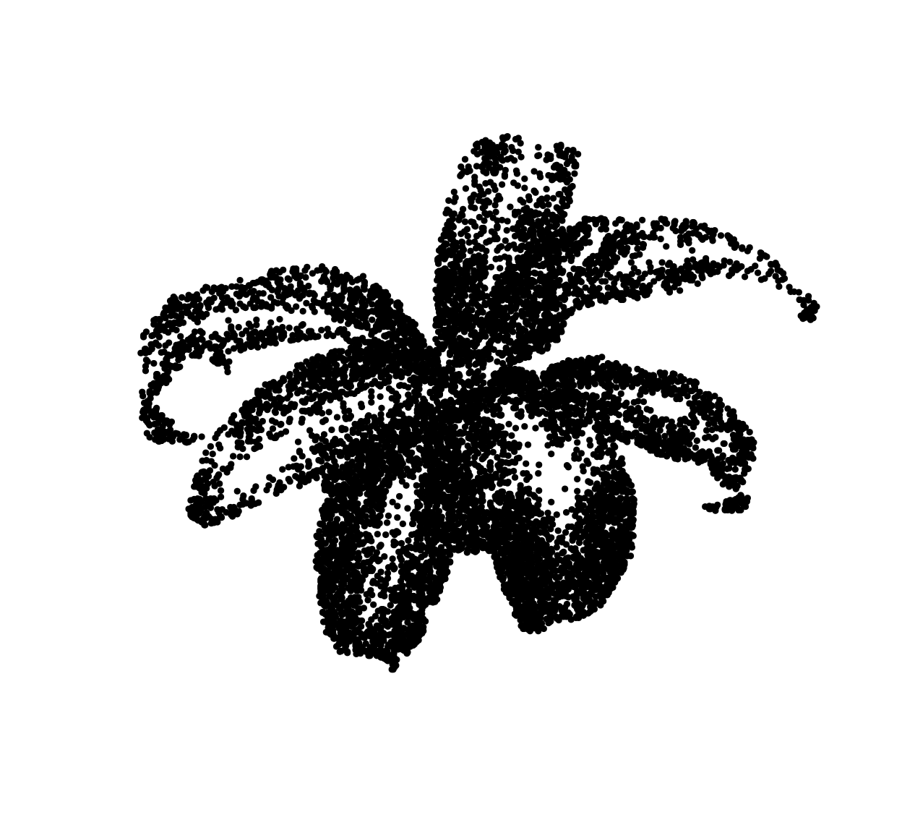
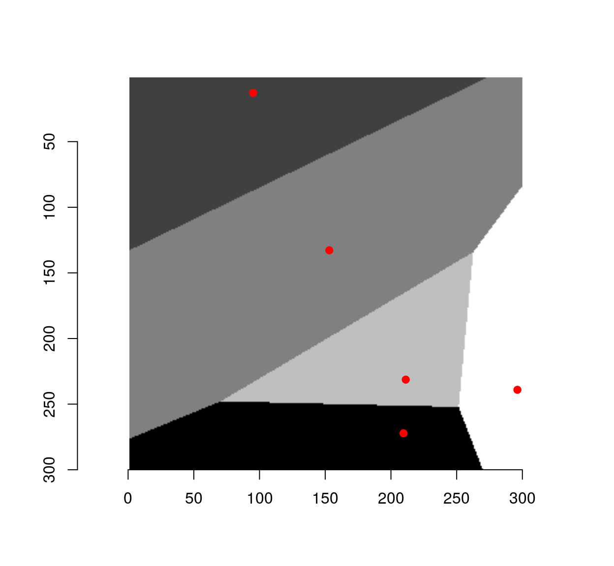
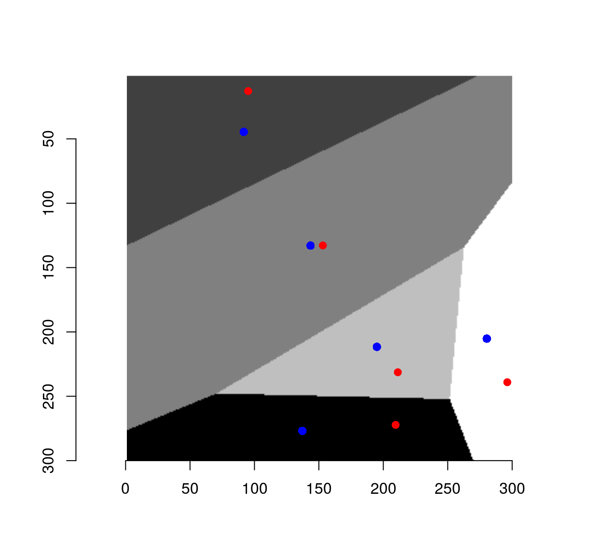
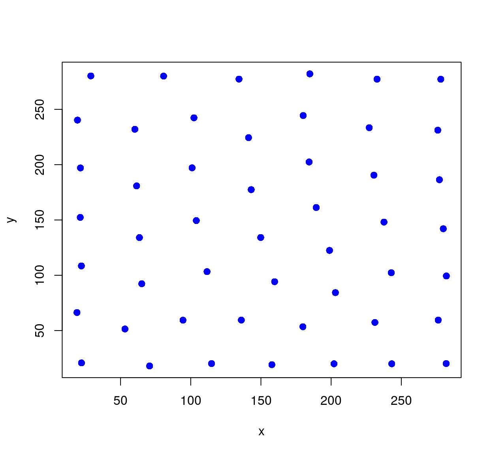
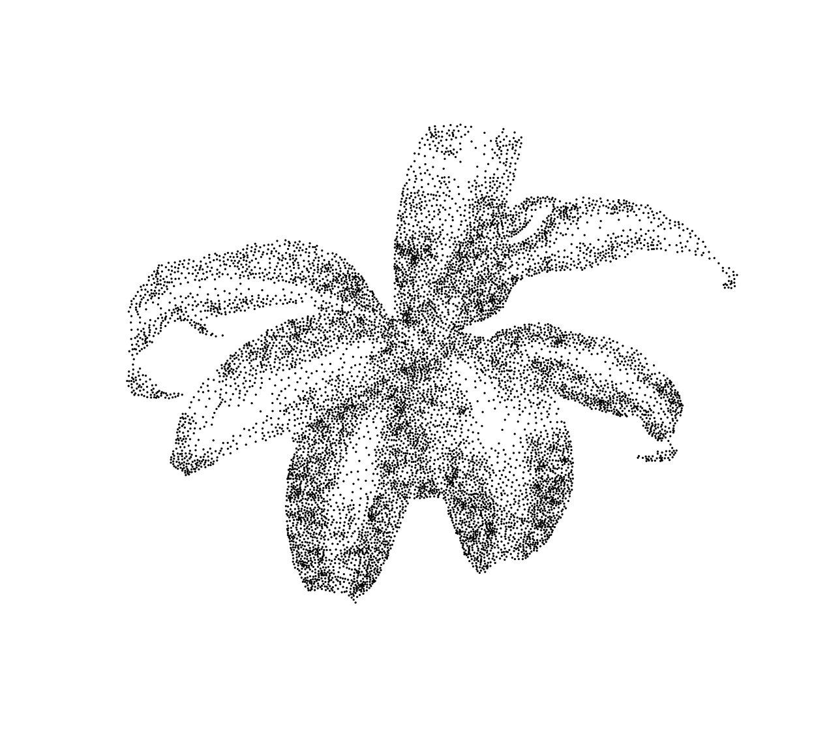
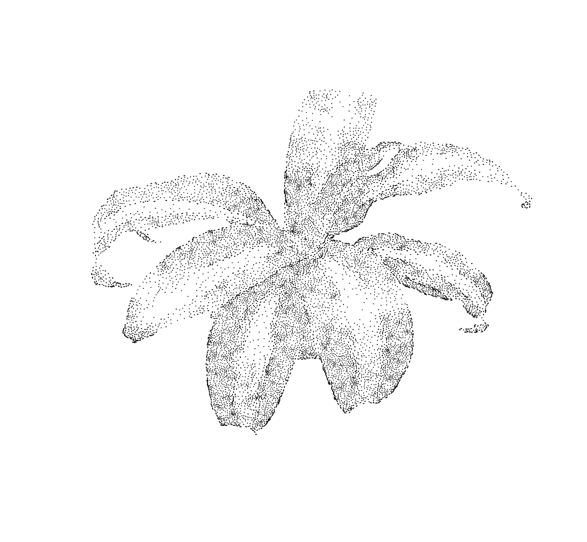
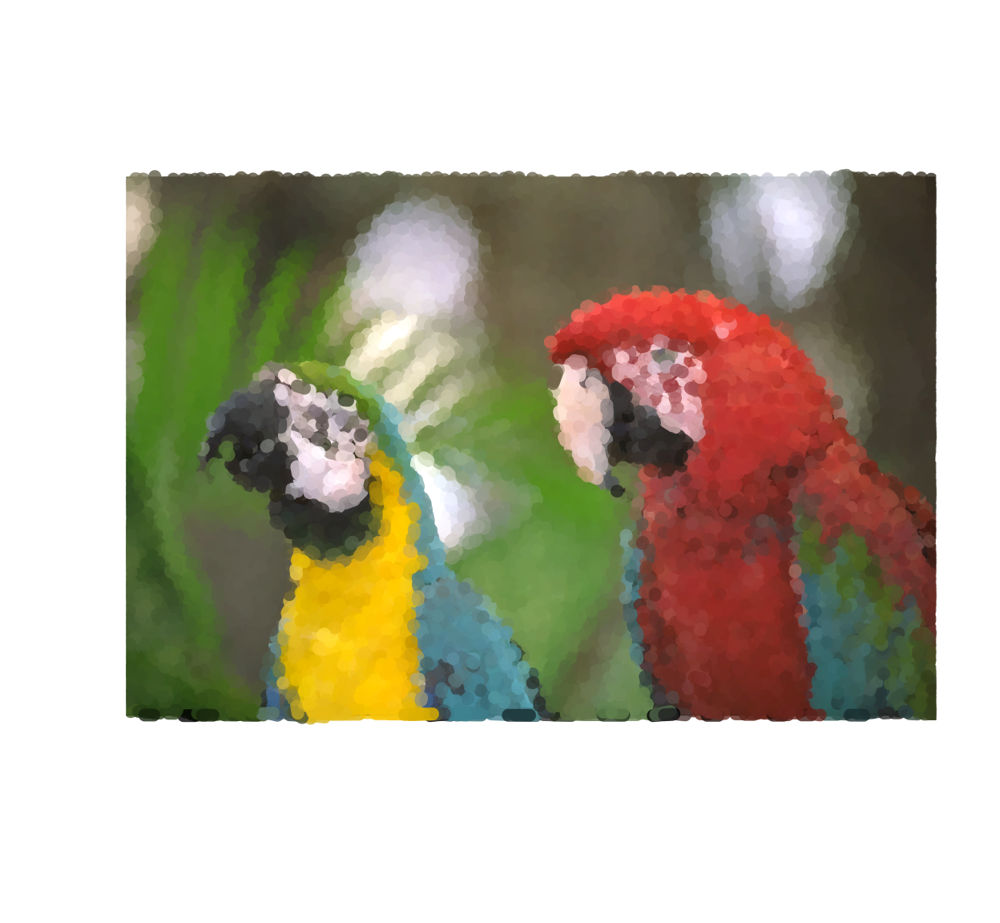

Simon Barthelmé (GIPSA-lab, CNRS)
The bits of code here mimic the sort of computer art produced by the StippleGen program (and others). Stippling (Seccord, 2002) produces pointillist drawings (it’s essentially a variant of dithering) and TSP art renders shapes using a single continuous line.
Stippling has a interesting connection to statistics, specifically spatial statistics. Let’s say the goal is to render an image by drawing a lot of black dots. Areas with a high density of black dots will appear dark, while areas with a low density will appear light. We could use simple random sampling for this purpose:
library(dplyr)## Warning: Installed Rcpp (0.12.12) different from Rcpp used to build dplyr (0.12.11).
## Please reinstall dplyr to avoid random crashes or undefined behavior.##
## Attaching package: 'dplyr'## The following object is masked _by_ '.GlobalEnv':
##
## last## The following objects are masked from 'package:plyr':
##
## arrange, count, desc, failwith, id, mutate, rename, summarise,
## summarize## The following objects are masked from 'package:stats':
##
## filter, lag## The following objects are masked from 'package:base':
##
## intersect, setdiff, setequal, unionlibrary(imager)
im <- load.image("http://dahtah.github.io/imager/images/stippling_leaves.png")
plot(im)##Draw pixels with prob. proportional to 1 minus the grayscale value
xy <- sample(nPix(im),1e4,replace=TRUE,prob=1-im) %>%
coord.index(im,.) %>%
select(x,y)
plot(xy,ylim=c(height(im),1),pch=19,cex=.5,axes=FALSE,xlab="",ylab="")
The general principle is fine but the end result looks like crap. Drawing points IID produces a lot of near-overlap. More pleasing results could be achieved if we could reduce the overlap between dots. One way to do this is via thinning, as in Matern point processes: erase dots that are too close to other dots. Unfortunately, this reduces dot density more in high-density areas than it does in high-density areas, which reduces contrast. From a statistical point of view, the objective is to change the distribution of the dots to reduce overlap (a high-order statistic) while leaving the first-order statistic (density) unperturbed. Seccord (2002) uses weighted Voronoi diagrams. Refer to the paper for a full explanation, but it’s a variant of Lloyd’s algorithm, AKA k-means.
Given a set of points \(\mathcal{X} = x_1, \ldots, x_n\), the Voronoi diagram is a set of cells \(V_i\) for \(V_i\) contains all the points of the plane that are closer to \(x_i\) than to any other points in \(\mathcal{X}\)
To compute a Voronoi diagram in imager, we can use the distance transform and a watershed, like so:
##Compute Voronoi diagram for points xy over image of size (w,h)
##Uses a distance transform followed by watershed
voronoi <- function(xy,w,h)
{
v <- imfill(w,h)
ind <- round(xy) %>% index.coord(v,.)
v[ind] <- seq_along(ind)
d <- distance_transform(v>0,1)
watershed(v,-d,fill_lines=FALSE)
}
#Resolution
res <- 300
xy <- data.frame(x=runif(5,1,res),y=runif(5,1,res))
vr <- voronoi(xy,res,res)
plot(vr)
points(xy,col="red",pch=19)
To get the center of mass of each cell, we convert to a data.frame format and use dplyr:
xy.c <- as.data.frame(vr) %>%
group_by(value) %>% dplyr::mutate(x=mean(x),y=mean(y))
plot(vr)
points(xy,col="red",pch=19)
points(xy.c,col="blue",pch=19)
The set of centers is generally different from the initial set of points, unless we started from a special set of highly-regular point locations. Such regular sets give rise to so-called centroidal Voronoi diagrams (CVD). CVDs are produced by starting from a bunch of random locations, and iterating the step that got us from the red dots to the blue dots.
The code below starts with random, IID locations, and runs 50 iterations of Lloyd’s algorithm:
cvd <- function(xy,res,nSteps=50)
{
for (ind in seq_len(nSteps))
{
xy <- voronoi(xy,res,res) %>% as.data.frame %>%
group_by(value) %>%
dplyr::mutate(x=mean(x),y=mean(y)) %>%
ungroup %>%
select(x,y)
}
xy
}
##Start from initial random set and iterate 50 times to get an (approx.) CVD
xy <- data.frame(x=runif(50,1,res),y=runif(50,1,res))
cvd(xy,res,55) %>% plot(col="blue",pch=19)
An iteration of Lloyd’s algorithm has a powerful regularising effect on the points. In our case it’s too powerful, and we need to balance the requirement of regularity with that of keeping many dots in dark areas.
Enters Seccord’s algorithm, a variant of Lloyd’s where instead of computing the center of mass of each Voronoi cell, we compute a weighted center of mass where the weights are formed from pixel values. The weights are set such that centers are pulled towards dark areas. It’s a straightforward modification of the code above:
##Compute Voronoi diagram of point set xy,
##and return center of mass of each cell (with density given by image dens)
cvt <- function(xy,dens)
{
voronoi(xy,width(dens),height(dens)) %>% as.data.frame %>%
mutate(vim=c(dens)) %>%
group_by(value) %>%
dplyr::summarise(x=weighted.mean(x,w=vim),y=weighted.mean(y,w=vim)) %>%
select(x,y) %>%
filter(x %inr% c(1,width(dens)),y %inr% c(1,height(dens)))
}Iterate this process several times, and you have a stippling algorithm.
##im: (grayscale) image to stipple
##ndots: number of dots fro stippling
##gamma: contrast enhancement
##nSteps: number of iterations
stipple <- function(im,nDots=1e3,gamma=1,nSteps=5)
{
dens <- (1-im)^gamma
xy <- sample(nPix(im),nDots,replace=TRUE,prob=dens) %>% coord.index(im,.) %>% select(x,y)
for (ind in seq_along(nSteps))
{
xy <- cvt(xy,dens)
## uncomment if you want to plot each step
## plot(im); points(xy,col="red")
}
xy
}
out <- stipple(im,1e4,gamma=1)
plot(out,ylim=c(height(im),1),cex=.1,pch=19,axes=FALSE,xlab="",ylab="")
Below, a variant that plots line segments instead of dots, orienting each segment using the image gradient:
library(purrr)##
## Attaching package: 'purrr'## The following objects are masked from 'package:dplyr':
##
## contains, order_by## The following object is masked from 'package:plyr':
##
## compact## The following object is masked from 'package:magrittr':
##
## set_namesplot.segments <- function(im,out,scale=40)
{
g <- imgradient(im,"xy") %>% map(~ isoblur(.,3)) %>% map(~ interp(.,out))
plot(out,ylim=c(height(im),1),cex=.5,pch=19,col="white",axes=FALSE,xlab="",ylab="")
segments(out$x,out$y,out$x-scale*g$y,out$y+scale*g$x)
}
plot.segments(im,out)
Another variant, with a mosaic effect:
mosaic <- function(im,nDots=1e4,scale=140,gamma=.2)
{
out <- grayscale(im) %>% stipple(nDots,gamma=gamma)
col <- interp(im,out) %$% rgb(c.1,c.2,c.3,.8)
g <- grayscale(im) %>% imgradient("xy") %>% map(~ isoblur(.,3)) %>% map(~ interp(.,out))
plot(im,axes=FALSE,xlab="",ylab="")
#plot(out,ylim=c(height(im),1),cex=.5,pch=19,col="white",axes=FALSE,xlab="",ylab="")
segments(out$x,out$y,out$x-scale*g$y,out$y+scale*g$x,col=col,lwd=8)
}
load.example("parrots") %>% mosaic